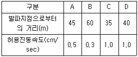
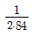
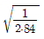
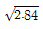
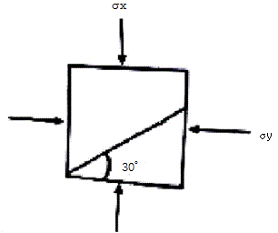
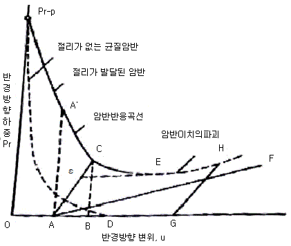

화약류관리산업기사 (2018-09-15 기출문제)
1과목: 일반화약학
1. 화약류 제조시 산소공급제로 이용되는 것은?
- 염산
- 소금
- 규소철
- 과염소산암모늄
(정답률: 알수없음)

2. 슬러리 폭약의 조성이 아닌 것은?
- 물
- 질산나트륨
- 중유
- 질산암모늄
(정답률: 알수없음)
3. 혼합화약류에 속하지 않는 것은?
- 흑색화약
- 질산암모늄폭약
- 카알릿
- 면약
(정답률: 알수없음)
4. 다음 화약류 중에서 자연발화 또는 자연폭발을 일으키는 경향이 가장 높은 것은?
- 면약
- 흑색화약
- 도화선
- 함수폭약
(정답률: 알수없음)
5. 화약류에 대한 설명으로 틀린 것은?
- 테트라센은 총용뇌관의 폭분으로 사용되고 있다.
- 트리시네트는 총용뇌관의 폭분 또는 아지화연 폭분으로 기폭제에 사용된다.
- 니트로글리콜은 다이너마이트의 부동제로 사용되고 있다.
- 니트로글리세린과 니트로셀룰로오스는 클로로포름에 잘 용해되지 않는다.
(정답률: 알수없음)
6. 다이너마이트에 함유하는 NC(nitro cellulose)의 역할은?
- 예감제
- 산소공급제
- 교화제
- 소염제
(정답률: 알수없음)
7. NG, NC 등을 포함한 화약을 유리산시험시 4~6시간 이내에 리트머스시험지가 어떤 색으로 변색하면 불량품으로 하는가?
- 파란색
- 노란색
- 붉은색
- 검은색
(정답률: 알수없음)
8. 탄소의 100g당 산소평형 값은 약 얼마인가?(오류 신고가 접수된 문제입니다. 반드시 정답과 해설을 확인하시기 바랍니다.)
- -2.67
- -267
- +2.67
- +267
(정답률: 알수없음)
9. 저압 전기뇌관의 사용전압은 어느 정도가 가장 적당한가?
- 0.5~2.0V
- 2.0~3.5V
- 2.8~4.5V
- 10~50V
(정답률: 알수없음)
10. KS 규격에 의거 도화선 1m의 평균 연소 초시는 몇 초 내에 있어야 하는가?
- 20~40초
- 49~80초
- 80~100초
- 100~140초
(정답률: 알수없음)
11. 공업용 뇌관의 첨장약으로 주로 이용되는 것은?
- 아마톨
- 헥소겐
- 흑색화약
- 뇌홍
(정답률: 알수없음)
12. 전기뇌관에 대한 설명으로 옳지 않은 것은?
- 전기뇌관의 저항은 백금선교(wire bridge)와 각선의 저항의 합이다.
- 전기뇌관은 공업뇌관에 전기적 점화 장치를 부착한 화공품이다.
- 전기뇌관 각선의 말단은 결선하기 까지는 단락시켜 놓는다.
- 지발전기뇌관의 구조는 점화약에 점화하면 직접 기폭약에 점화하게 되어 있다.
(정답률: 알수없음)
13. 뇌관 둔성폭약시험의 연판 두께규격으로 옳은 것은?
- 25mm
- 30mm
- 35mm
- 40mm
(정답률: 알수없음)
14. 니트로글리세린을 제조하려고 한다. 순도 100%의 정제글리세린에 혼산을 가하여 제조할 때 제품 1ton을 생산하기 위하여 정제글리세린은 약 몇 kg이 필요한가?
- 202
- 4⑤
- 810
- 1215
(정답률: 알수없음)
15. 탄광의 갱내에서 사용이 가능한 뇌관의 관체 재질은?
- 동
- 알루미늄
- 안티몬
- 주석
(정답률: 알수없음)
16. Nitro cellulose를 만들 때 혼산(HNO3+H2SO4)이 사용한다. 이 때 H2SO4의 작용은?
- 산화제
- 환원제
- 안정제
- 탈수제
(정답률: 알수없음)
17. ANFO제조에 사용되는 연료유의 조건으로 가장 거리가 먼 것은?
- 인화점이 상온보다 높을 것
- 점성, 휘발성이 높을 것
- 취급이 편리할 것
- 불순물이 적을 것
(정답률: 알수없음)
18. 화합 화약류에 있어서 뇌(雷)산염이 갖는 폭발성 화합물 구조는?
- O2N-O-
- -NO2
- -O-N=C
- -N=N-
(정답률: 알수없음)
19. 흑색화약에 대한 설명으로 옳은 것은?
- 질산암모늄을 주제로 한 화약이다.
- 보통 무연화약으로 발화시 거의 연기를 내지 않는다.
- 화염, 마찰, 충격에 예민하다.
- 자연분해 하기 쉽고 오래 저장할 수 없다.
(정답률: 알수없음)
20. 뇌관의 위력을 측정하는 납판시험에서 사용하는 납판의 두께는?
- 2mm
- 3mm
- 4mm
- 5mm
(정답률: 알수없음)
2과목: 발파공학
21. 밀리세컨드(MS)발파를 시행하여야 할 경우가 아닌 것은?
- 수중발파
- 대발파
- 소할발파
- 터널발파
(정답률: 알수없음)
22. 비전기식 뇌관의 결선 방법의 특징에 대한 설명으로 틀린 것은?
- 비전기식 기폭시스템은 점화 에너지의 전달법으로 개발한 연결용 튜브를 기본요소로 한다.
- Deck Charge시나 다수공의 제발효과를 얻기 위해서는 발파 Pattern에 따른 결선계획을 세운다.
- 만일 전기 뇌관을 사용하여 비전기식 Round를 발파할 경우 Round의 발파준비가 완벽하게 완료된 상태에서 전기 뇌관을 연결한다.
- 비전기식 뇌관의 결선에는 도폭선을 사용할 수 없다.
(정답률: 알수없음)
23. 수중 발파작업의 특징에 대한 설명으로 틀린 것은?
- 같은 암질이라도 육상 작업보다 많은 천공수가 요구된다.
- 기폭을 위해 전기뇌관이나 비전기식뇌관 모두 사용이 가능하다.
- 수중에서 기폭하는 경우 암반내에서 기폭하는 경우보다 충격압의 크기가 작다.
- OD공법과 켈리바(kelly bar)공법은 플랫폼을 만들어 천공하는 방법이다.
(정답률: 알수없음)
24. MS발파법의 일반적인 특징으로 틀린 것은?
- 파쇄효과가 크고, 암석이 적당한 크기로 잘게 깨진다.
- 분진의 발생량이 비교적 적다.
- 발파 후 암괴가 멀리 날아가지 않고 막장 근처에 높이 쌓인다.
- 발파에 의한 진동과 소음이 적다.
(정답률: 알수없음)
25. NG 60%인 스트렝스 다이나마이트 1kg으로 어떤 암석을 파괴했다면 NG 40%인 다이나마이트를 사용할 경우 얼마의 다이나마이트가 필요한가? (단, 맹도에서 본 e값 적용)
- 0.8kg
- 1.0kg
- 1.2kg
- 1.4kg
(정답률: 알수없음)
26. 번컷(Burn cut)을 실시할 때 무장약공에 인접한 장약공을 밀장전할 경우 발생하기 쉬운 현상은?
- 측벽효과
- 기폭효과
- 순폭현상
- 소결현상
(정답률: 알수없음)
27. 터널발파를 위한 폭약의 선정 시 고려하여야 할 요소로 거리가 먼 것은?
- 작업원의 수
- 발파 후 발생 가스
- 내수성
- 암반의 강도
(정답률: 알수없음)
28. 진동속도가 주파수 50Hz의 연속 정현진동으로 0.3cm/s 으로 측정 되었을 때 진동 level은 약 얼마인가?
- 60dB(V)
- 70dB(V)
- 80dB(V)
- 90dB(V)
(정답률: 알수없음)
29. 시험발파에서 V(cm/sec)=160(SD)-1.6의 발파진동식을 얻었으며 제곱근 환산거리를 이용하였다. 이때 보안물건이 다음과 같이 있을 경우 지발당 최대 허용장약량 계산의 기준이 되는 보안물건은?

- A 보안물건
- B 보안물건
- C 보안물건
- D 보안물건
(정답률: 알수없음)
30. 초안유제폭약(ANFO)의 장전에 대한 설명 중 잘못된 것은?
- 장전작업 중에는 화기사용을 하지 말아야 한다.
- 장전기는 접지시킨 후 사용해야 한다.
- ANFO의 전폭약은 신속한 장전을 위해 장전기호스를 이용하여 장전한다.
- 금이 가고 틈이 벌어지거나 공동이 있는 천공된 구멍에는 지나치게 장약을 해서는 안된다.
(정답률: 알수없음)
31. 터널 발파시 대피장소의 조건으로 적합하지 않은 것은?
- 발파지점을 눈으로 확인하고 숩게 접근할 수 있는 곳
- 발파의 진동으로 천반이나 측벽이 무너지지 않는 곳
- 발파로 인한 파쇄석이 날아오지 않는 곳
- 경계원으로부터 연락을 받을 수 있는 곳
(정답률: 알수없음)
32. 시험발파 시 발파진동 계측실시로 장약량변화에 따른 감쇠지수를 파악하고 신뢰성 있는 분석을 하려한다. 최소 몇 점 이상의 계측자료를 확보하여야 하는가?
- 5
- 10
- 15
- 30
(정답률: 알수없음)
33. 댐, 항만, 도로 등의 건설에 있어서 산이나 구릉지의 하부에 대규모 장약을 한 후 발파하여 암석을 적당한 크기로 파쇄시키면서 소정의 위치로 이동시키는 발파방법은 무엇인가?
- 협동장약발파(Cooperating Charge Blasting)
- 정향발파(Direction Blasting)
- 글로리홀 발파(Glory Hole Blasting)
- 트림발파(Trim Blasting)
(정답률: 알수없음)
34. 굴착 예정면을 따라 인위적인 균열을 미리 만드는 발파법은?
- Pre-splitting
- Line drilling
- Cushion blasting
- Coromant-cut
(정답률: 알수없음)
35. 발파에 관한 설명 중 옳지 않은 것은?
- 응력파는 그 전파 중에 매질의 자유면에 도달하면 그곳에서 반사된다.
- 충격하중이란 하중이 극히 높은 유한치로 계속 상승하는 하중이다.
- 표준장약발파의 장약량은 크레이터의 부피에 비례한다.
- 폭약위력계수의 값은 위력이 작은폭약일수록 커지게 된다.
(정답률: 알수없음)
36. 제발발피 시 전단계수 K1과 인장계수 K와의 비의 값(K1/K)은?

- 2.84


(정답률: 알수없음)
37. 전기뇌관 5개를 직렬 결선하고 다시 이것을 3열 병렬 결선하여 50m의 거리에서 발파할 때 소요전압은 얼마인가? (단, 소요전류 1.2A, 발파기의 내부저항 3.0Ω, 전기뇌관 1개의 저항 0.972Ω, 발파 모선 1m당 저항 0.0209Ω)
- 15.94V
- 19.54V
- 24.16V
- 28.43V
(정답률: 알수없음)
38. 시험발파에서 폭약 500g을 사용하여 폭파한 결과 누두공 모양이 약장약(n=0.9)이었다면 표준장약(n=1.0)dl 되게 하려면 장약량은 약 얼마가 되어야 하는가? (단, Dambrun 식을 적용)
- 590g
- 610g
- 630g
- 650g
(정답률: 알수없음)
39. 천공 및 발파의 순서를 옳게 나타낸 것은?
- 천공 위치의 선정 → 천공 → 전폭 약포의 제작 → 천공의 점검 → 장전 → 전색 → 피난 → 경계 → 점화 → 발파의 확인
- 천공 위치의 선정 → 천공 → 천공의 점검 → 전포 약포의 제작 → 장전 → 전색 → 피난 → 경계 → 점화 → 발파의 확인
- 천공 위치의 선정 → 천공 → 전폭 약포의 제작 → 천공의 점검 → 장전 → 전색 → 피난 → 점화 → 경계 → 발파의 확인
- 천공 위치의 선정 → 천공 → 전폭 약포의 제작 → 천공의 점검 → 장전 → 전색 → 경계 → 피난 → 점화 → 발파의 확인
(정답률: 알수없음)
40. 다음 중 전기뇌관 사용 시 파쇄암석의 비산거리가 멀리 이동되는 순서가 올바른 것은?
- 순발 ＞ DS ＞ MS
- 순발 ＞ MS ＞ DS
- MS ＞ 순발 ＞ DS
- MS ＞ DS ＞ 순발
(정답률: 알수없음)
3과목: 암석역학
41. 암석의 영률이 4000kg/cm2이고, 포아송비(Poisson’s ratio)가 0.2일 때의 강성률은?
- 800kg/cm2
- 1667kg/cm2
- 6400kg/cm2
- 20000kg/cm2
(정답률: 알수없음)
42. 다음 중 Creep현상을 나타내지 않는 이상물체는?
- Voigt 물체
- Maxwell 물체
- Bingham 물체
- St. Vennant 물체
(정답률: 알수없음)
43. RMR값이 75인 불교란(undisturbed)암반의 Hoek-Brown 파괴조건상수 s는?
- 0.06
- 0.12
- 0.18
- 0.24
(정답률: 알수없음)
44. 다음 중 비감쇠능(Specific damping capacity)에 영향을 미치는 요소가 아닌 것은?
- 온도
- 주파수
- 함수비
- 응력수준
(정답률: 알수없음)
45. 암석의 파괴이론 중 Tresca 이론에 대한 설명으로 옳지 않은 것은?
- Tresca 이론에서는 전단강도와 인장강도가 같아지게 된다.
- Tresca 이론에서는 중간주응력이 파괴에 영향을 이치지 않는다.
- 최대전단응력은 최대주응력과 최소주응력차의 반으로 표시된다.
- 최대전단응력이 일정한 값에 도달하면 파괴가 일어난다는 이론다.
(정답률: 알수없음)
46. RQD(Rock Qualiy Designation)의 정의는?
- 일축압축강도를 나타내는 지수
- 암반의 풍화도를 나타내는 지수
- 원지반과 실내실험에서 얻어지는 탄성계수의 비
- NX 보링으로 얻어진 코어의 길이 중 10cm 이상의 암석코어의 누적길이 백분율
(정답률: 알수없음)
47. 암석의 역학적 성질 중 크리프(Creep)현상에 대한 설명으로 옳은 것은?
- 응력과 변형률이 정비례하는 현상이다.
- 횡변형률이 증가함에 따라 종변형률이 증가하는 현상이다.
- 일정한 변형률 하에서 응력이 시간에 따라 증대하는 현상이다.
- 일정한 응력 하에서 변형률이 시간에 따라 증대하는 현상이다.
(정답률: 알수없음)
48. 다음 중 굴착지보계수(ESR)의 값이 작은 것부터 큰 것 순서로 올바르게 나열된 것은?
- 대형 철도터널 – 지하 철도역 – 지하저장시설 – 영구적인 광산 갱도
- 영구적인 광산 갱도 – 대형 철도터널 – 지하저장시설 – 지하 철도역
- 지하 철도역 – 대형 철도터널 – 지하저장시설 – 영구적인 광산 갱도
- 영구적인 광산 갱도 – 지하저장시설 – 대형 철도터널 – 지하 철도역
(정답률: 알수없음)
49. 일축압축시험을 통해 직접적으로 얻을 수 있는 정보가 아닌 것은?
- 영률
- 강성률
- 포아송비
- 일축압축강도
(정답률: 알수없음)
50. 아래 그림과 같이 평면요소에 σx=100MPa, σy=6MPa의 수직응력이 작용하는 경우, 경사면위에 발생하는 수직응력은?

- 7.0MPa
- 8.5MPa
- 10.0MPa
- 11.5MPa
(정답률: 알수없음)
51. 다음 그림은 Deere 등(1970)에 의해 제안된 암반반응곡선이다. 여기서 지하구조물의 계측에 따라 가장 적절히 설계된 지보를 나타내는 것은?

- A-A’
- A-C
- A-F
- G-H
(정답률: 알수없음)
52. 터널 계측 중 암질, 단층파쇄대, 습곡구조, 변질대 등의 성상파악 및 단초 지반 구분의 재평가 등을 위한 방법으로 가장 적합한 것은?
- 갱내관찰조사
- 내공변위 측정
- 지중변위 측정
- 천단침하 측정
(정답률: 알수없음)
53. 다음 중 국제암반역학회(ISRM)에 의해 제안된 불연속면 발달상태에 대한 표준적인 조사 항목이 아닌 것은?
- 방향성
- 간격
- 거칠기
- 면적
(정답률: 알수없음)
54. 다음 중 초기응력을 측정하는데 탄성상수(elastic constant)가 필요 없는 초기응력 측정법은?
- 공벽변형법(Leeman method)
- 응력보상법(Flat jack method)
- 공저변형법(Doorstopper method)
- 공견변형법(Diametral deformation method)
(정답률: 알수없음)
55. 암반 사면이 연약한 풍화암으로 구성되어 있고, 주방향이 존재하지 않는 절 리가 무수히 많이 발달되어 토사화된 경우 발생할 수 있는 사면파괴의 형태는?
- 쐐기파괴
- 원호파괴
- 전도파괴
- 평면파괴
(정답률: 알수없음)
56. 암석의 성질에 대한 설명으로 옳은 것은?
- 지구의 평균밀도는 10g/cm3이다.
- 암석의 정탄성계수는 탄성파속도시험을 통해 구해진다.
- 암석의 정탄성계수는 흙의 정탄성계수보다 일반적으로 작게 나타난다.
- 암석의 동탄성계수는 일반적으로 정탄성계수보다 크게 나타난다.
(정답률: 알수없음)
57. 평면변형률상태에서 x면에 작용하는 응력(σx)이 200MPa, y면에 작용하는 응력(σy)이 30MPa이다. 이때 포아송비(v)가 0.3이라면 z방향의 응력(σz)은?
- 0MPa
- 5MPa
- 10MPa
- 15MPa
(정답률: 알수없음)
58. 암석의 역학적 성질 중 선형탄성에 대한 설명으로 옳은 것은?
- 외력을 제거하면 변형이 회복되지 않는 성질
- 외력이 일정한 경우 변형이 계속 증가하는 성질
- 외력이 증가하면 변형이 직선적으로 증가하는 성질
- 외력을 제거하면 부분적으로 변형이 회복되는 성질
(정답률: 알수없음)
59. 다음 중 Schmidt 반발경도의 특징에 대한 설명으로 옳지 않은 것은?
- 암석의 밀도가 높을수록 반발경도는 증가한다.
- 암석의 풍화가 진행될수록 반발경도는 감소한다.
- 암석의 일축인장강도가 높을수록 반발경도는 감소한다.
- 암석의 일축압축강도가 높을수록 반발경도는 증가한다.
(정답률: 알수없음)
60. 각종 암석강도시험중에서 가장 큰 값을 나타내는 것은?
- 일축 압축시험
- 전단강도 시험
- 압열 인장강도 시험
- 삼축 압축강도 시험
(정답률: 알수없음)
4과목: 화약류 안전관리 관계 법규
61. 화약류 안정도 시험을 해야 하는 것이 아닌 것은?
- 질산에스텔 성분이 들어있는 화약으로 제조일로부터 3년이 지난 것
- 질산에스텔 성분이 들어있지 않은 폭약으로 제조일로부터 3년이 된 것
- 화공품으로서 제조일로부터 1년이 지난 것
- 제조일이 분명하지 아니한 화공품으로 취득 후 1년이 지난 것
(정답률: 알수없음)
62. 화약류의 소지사용자가 발파 또는 연소에 관한 기준기술을 3회 위반하였을 때의 행정처분기준으로 옳은 것은?
- 경고
- 효력정지 15일
- 효력정지 1일
- 효력정지 3월
(정답률: 알수없음)
63. 화약과 비슷한 추진적 폭발에 사용될 수 잇는 것으로서 대통령령이 정하는 것에 포함되지 않는 것은?
- 무수규산을 주로 한 화약
- 과염소산염을 주로 한 화약
- 크롬산납을 주로 한 화약
- 황산알루미늄을 주로 한 화약
(정답률: 알수없음)
64. 동일인의 연속 점화수는 도화선 1개의 길이가 1.5m 이상일 때 몇 발 이하인가?
- 10발 이하
- 13발 이하
- 15발 이하
- 연속점화를 할 수 없다.
(정답률: 알수없음)
65. 사용허가를 받지 아니하고 신호 또는 관상용으로 1일 동일한 장소에서 사용할 수 있는 꽃불류의 수량 기준으로 옳은 것은?
- 직경 6cm 미만의 둥근모양의 쏘아 올리는 꽃불류 30개 이하
- 직경 6cm 이상 10cm 미만의 둥근모양의 쏘아 올리는 꽃불류 15개 이하
- 300개 이하의 염관을 사용한 쏘아 올리는 꽃불류 1개
- 직경 10cm 미만의 둥근모양의 쏘아 올리는 꽃불류 5개 이하
(정답률: 알수없음)
66. 다음 중 화약류관리보안책임자의 수행 업무가 아닌 것은?
- 화약류저장소의 위치·구조를 업무상 편리하게 변경하고 지방경찰청장에게 보고하는 업무
- 화약류저장소 부근에 화재가 발생시 응급조치를 지휘하는 업무
- 위해예방규정의 작성과 그 준수상황의 지도·감독
- 안전교육의 계획과 그 실시상황의 지도·감독
(정답률: 알수없음)
67. 화약류의 안정도시험을 실시한 살마은 그 시험결과를 누구에게 보고하여야 하는가? (단, 화약류를 제조 또는 수입한 사람)
- 행정안전부장관
- 경찰청장
- 지방경찰청장
- 경찰서장
(정답률: 알수없음)
68. 화약류 사용자가 비치하여야 할 서류는?
- 화약류 사용일지
- 화약류 출납부
- 화약류 발파계획서
- 종사원 교육일지
(정답률: 알수없음)
69. 화약류를 수입한 사람은 지체없이 행정안전부령이 정하는 바에 의하여 누구에게 신고하여야 하는가?
- 경찰청장
- 수입지 관할 지방경찰청장
- 수입지 관할 경찰서장
- 행정안전부장관
(정답률: 알수없음)
70. 화약류 취급소의 정체량으로 맞는 것은? (단, 1일 사용예정량 이하)
- 화약 800kg
- 전기뇌관 3500개
- 도폭선 6km
- 폭약(초류폭약 제외) 400kg
(정답률: 알수없음)
71. 허가를 받지 않고 양수할 수 있는 화약류의 수량으로 옳은 것은?
- 수렵용 실탄 또는 공포탄 1일 200개 이하
- 수렵용 실탄 또는 공포탄 1일 100개 이하
- 사격용 실탄 1일 300개 이하
- 사격용 실탄 1일 500개 이하
(정답률: 10%)
72. 재해의 예방 또는 공공의 안전을 위하여 행정안전부령이 정하는 바에 따라 경찰서장이 안전교육을 실시할 수 있는 사람으로 틀린 것은?
- 3급저장소 설치자
- 공기총 사격장 설치자
- 간이저장소 설치자
- 화약류관리보안책임자
(정답률: 알수없음)
73. 총포·도검·화약류 등의 안전관리에 관한 법률상 반드시 면허를 취소해야 하는 사항이 아닌 것은?
- 거짓이나 그 밖의 옳지 못한 방법으로 면허를 받은 사실이 드러난 경우
- 「국가기술자격법」에 따라 자격이 취소된 경우
- 면허를 다른 사람에게 빌려준 경우
- 공공의 안녕질서를 해칠 우려가 있다고 믿을 만한 상당한 이유가 있는 경우
(정답률: 알수없음)
74. 화약류 1급 저장소의 최대 저장량으로 틀린 것은?
- 총용뇌관 : 5000만개
- 전기도화선 : 무제한
- 신호뇌관 : 2000만개
- 미진동파쇄기 : 400만개
(정답률: 알수없음)
75. 광업법에 의하여 광물의 채굴을 하는 사람이 광물의 채굴을 목적으로 허가를 받지 않고 양수할 수 있는 폭약의 수량은?
- 1255g 이하
- 1225g 이하
- 1155g 이하
- 1125g 이하
(정답률: 알수없음)
76. 화약류관리보안책임자 면허 갱신 신청서 제출시 첨부하여야 하는 서류가 아닌 것은?
- 구면허증
- 신체검사서
- 사진
- 주민등록등본
(정답률: 알수없음)
77. 화약류의 폐기는 대통령령이 정하는 기술상의 기준에 따라야 한다. 이를 위반하여 화약류를 폐기한 사람에 대한 처벌 기준은?
- 10년 이하의 징역 또는 2천만원 이하의 벌금형
- 5년 이하의 징역 또는 1천만원 이하의 벌금형
- 3년 이하의 징역 또는 700만원 이하의 벌금형
- 2년 이하의 징역 또는 500만원 이하의 벌금형
(정답률: 알수없음)
78. 화약류 수·출입에 대한 내용으로 틀린 것은?
- 화약류제조업자·판매업자는 허가를 받아 화약류를 수출 또는 수입할 수 있다.
- 화공품 수입허가 신청시는 화공품 사용설명서를 첨하여야 한다.
- 공공의 안전유지를 위해서는 허가가 제한될 수 있다.
- 화약류를 수입한 자는 지체없이 수입지를 관할하는 경찰서장에게 신고하여야 한다.
(정답률: 알수없음)
79. 화약류의 운반방법으로 틀린 것은?
- 도폭선 2000m를 운반신고 없이 운반하였다.
- 미진동파쇄기 3500개를 운반신고 없이 운반하였다.
- 폭발천공기 500개를 운반신고 없이 운반하였다.
- 장난감용 꽃불류 500kg을 운반신고 없이 운반하였다.
(정답률: 알수없음)
80. 화약류저장소에서의 저장방법 및 취급방법으로 틀린 것은? (단, 수중저장소에서의 저장은 제외한다.)
- 저장소 안에서 휴대용 전등을 사용하였다.
- 저장소의 내부 환기에 유의하고 여름과 겨울철의 계절적 영향과 온도의 변화를 최소한도로 한다.
- 저장소 내부에 무연화약 또는 다이나마이트를 저장하였을 때 온도계를 비치하였다.
- 저장소에서 화약류를 출고하고자 하는 때에는 저장기간이 오래되지 않은 것부터 먼저 출고한다.
(정답률: 알수없음)